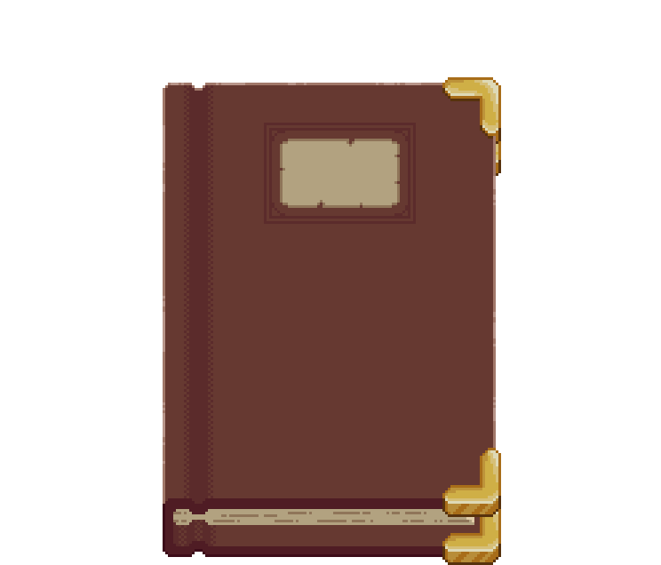

Get Started!

A collection of online (and offline) resources that, in my opinion, are ideal for anyone who wishes to start tinkering. The list is continually being updated as I encounter good resources out there in the wild.
General Websites
Reference for guided tutorials, theory, project ideas, and news pertinent to the hobbyist electronics community.
-
Electronics-Tutorial : Simple, clean tutorial site. The topics are not arranged in an ideal sequence, in my opinion, but it is still a great first reference.
-
Sparkfun Learn : A pretty exhaustive list of tutorials (and in general, information) regarding the myriad modules you can get for the Arduino ecosystem.
-
All About Circuits : Framed like a textbook (technically, it is one), it is an excellent learning resource for beginners. Their blog is pretty technical, but you can find useful/interesting stuff on it.
-
electronicstheory.com : A very old, and respected, site on electronics theory up to an intermediate level.
-
Instructables : Always a good source for project ideas.
-
EEVblog : Best blog out there for all things EE.
-
Electrical4U : Informative articles.
-
Arduino Docs : Something you should have in your bookmarks if you work with Arduinos. Well written, and concise.
Communities
Communities are a great way to get involved with electronics as a hobby.
-
/r/AskElectronics : For those of you out there who are familiar with Reddit, r/AskElectronics is a very good community to get started in.
-
Electronics StackExchange : Ask questions here, if Reddit is not your thing (and I don’t blame you if it isn’t).
Video Resources
-
GreatScott’s Electronic Basics Playlist : If video tutorials are your thing, GreatScott’s Electronic Basics is an excellent place to start. You might want to check out his YT Channel in general, it has great stuff.
-
Afrotechmods : Though he hasn’t put out any new videos/blog posts in over 5 years, Afrotechmods’ YT channel and website remain excellent references.
Books
You’ll find me hoarding these books at the Library most of the time, but I’m willing to share.
-
The Art of Electronics - Paul Horowitz, Winfield Hill: Highly recommended read. Our library has a copy, here. Also, check out Learning The Art of Electronics, a great hands-on lab course designed around the book. Buy the components (they’re cheap!) and try it out yourself. The Art of Electronics: X Chapters is an advanced book containing all the topics that could not be fit into the original. I can’t really vouch for or against it - it mostly remains beyond my powers of comprehension. These are the best books I have seen for self-learning electronics.
-
Electronic Principles - Albert Paul Malvino, David J. Bates: Standard textbook on all things electronics - and for good reason. Library copy here.
-
Digital Computer Electronics - Albert Paul Malvino, Jerald A. Brown: Library copy here.
-
Practical Electronics Handbook - Ian R. Sinclair, John Dunton: The library has a copy, but I haven’t been able to track it down yet :(
-
Electronics: A Physical Approach - David W. Snoke: Excellent read, also highly recommended.
Arduino specific
If you ask me, the best way to start is to just get yourself and Arduino kit, go on Instructables, decide on some project (doesn’t matter if it looks complicated, it just needs to interest you) and, well, just start. In my experience, you always learn this stuff faster if you build it yourself instead of just reading the theory.
More to come!
I’ll be adding websites, YT channels, books, and other resources as I come across them. Feel free to contact me with any suggestions! Looking forward to an active hobbyist electronics community on campus :)